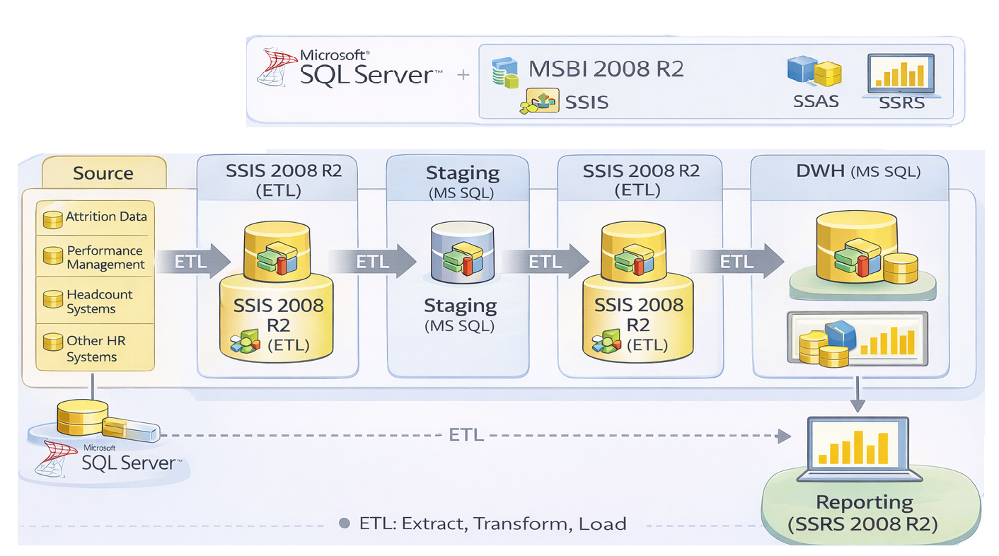

Enterprise HR Analytics & Data Warehouse Modernization for Global Technology Services Organization
Case Study Summary
Client: Global Technology Consulting & Services Organization (Accenture)
Industry: Technology Consulting & Professional Services
Engagement Duration: 18+ Months
Role: Senior Data Warehouse Developer
Team Size: 5–8 (Data Engineers, SSRS Developers, ETL Specialists)
Impact Metrics:
- Centralized analytics for 150,000+ employees across multiple global locations and business units
- Automated data consolidation from 8+ HR systems into unified data warehouse
- Reduced reporting cycle time by 60% through automated ETL pipelines
- Enabled real-time workforce insights for strategic HR planning and attrition analysis
- Eliminated manual data reconciliation saving 100+ hours monthly across HR teams
- 99.9% data accuracy achieved through standardized validation frameworks
- Improved analytics accessibility for 500+ HR and business stakeholders globally
Business Problem
The organization managed a global workforce of 150,000+ employees across multiple geographic regions, each maintaining separate HR systems for different functions.
Key Challenges:
Fragmented HR Ecosystem
- Multiple disconnected applications: HR Core, Payroll, Performance Management, Attrition Tracking, Time Management
- No unified view of workforce data across regions and business units
- Inconsistent employee metrics and KPI definitions
Manual Data Consolidation
- HR teams spent significant time manually collecting and reconciling data across systems
- Delayed reporting cycles prevented timely decision-making
- Risk of errors in manually consolidated reports
Limited Strategic Insights
- Inability to perform cross-functional workforce analytics
- No predictive insights for attrition or performance trends
- Executives lacked real-time visibility into workforce health metrics
Scalability Concerns
- Growing employee base and data volumes overwhelmed existing processes
- Regional HR teams duplicating effort with local spreadsheets
- No standardized approach to workforce analytics
Our Approach
Delivered an enterprise-grade data warehouse solution that unified fragmented HR data sources, automated analytics workflows, and enabled strategic workforce insights across the global organization.
1. Enterprise Data Warehouse Architecture
Multi-Layered Design:
- Source Systems Integration: Connected 8+ HR applications (Core HR, Payroll, Performance, Attrition, Time & Attendance)
- Staging Layer: Standardized data formats and resolved data quality issues
- Data Warehouse Layer: Star schema with optimized dimensions and facts
- Employee Dimension (demographic, organizational hierarchy, skills)
- Time Dimension (fiscal calendars, pay periods)
- Organization Dimension (business units, regions, cost centers)
- Fact tables for headcount, payroll, performance, attrition
Scalability Features:
- Partitioned fact tables for performance optimization
- Indexed dimension tables for fast query performance
- Separate analytical database to isolate reporting workload from operational systems
2. ETL Pipeline Development & Automation
Comprehensive SSIS Framework:
- 50+ ETL packages handling full and incremental loads
- Automated data validation at each stage (source → staging → warehouse)
- Error handling and logging for monitoring and troubleshooting
- Data quality checks ensuring consistency and accuracy
Key ETL Processes:
- Employee master data synchronization with SCD Type 2 (history preservation)
- Payroll data aggregation by employee, time period, and cost center
- Performance ratings and review cycle tracking
- Attrition analysis with exit reasons and trends
- Time and attendance summaries
Scheduling & Orchestration:
- Autosys-based job scheduling with dependency management
- Automated overnight processing for next-day reporting
- Real-time alerts for failed jobs or data quality issues
3. Business Intelligence & Reporting
SSRS Report Suite (100+ Reports):
- Executive Dashboards: Headcount trends, cost analytics, attrition rates
- HR Operations: Employee onboarding/offboarding tracking, compliance reports
- Workforce Planning: Skill gap analysis, succession planning insights
- Regional Reports: Location-specific HR metrics for local management
Self-Service Analytics:
- Standardized semantic layer enabling business users to create ad-hoc reports
- Pre-built templates for common HR queries
- Role-based access control ensuring data security
4. Data Quality & Governance
Validation Framework:
- Source-to-warehouse reconciliation checks
- Cross-system validation rules
- Anomaly detection and alerting
- Audit trails for data lineage and compliance
Quality Improvements:
- Standardized employee ID mapping across systems
- Consistent organizational hierarchy alignment
- De-duplication logic for overlapping records
Results & Impact
Unified Workforce Analytics
- Single source of truth for 150,000+ employee records
- Real-time visibility into workforce composition, costs, and trends
- Consistent metrics eliminating conflicting reports across regions
Operational Efficiency
- 60% reduction in reporting cycle time (from days to hours)
- 100+ hours saved monthly through automated data consolidation
- Eliminated manual reconciliation errors and rework
Strategic Decision Enablement
- Predictive attrition analytics helping proactive retention strategies
- Skills inventory visibility enabling better project staffing decisions
- Cost optimization insights through payroll and headcount analytics
Improved Data Trust
- 99.9% data accuracy through automated validation
- Reduced support tickets related to data discrepancies
- Enhanced stakeholder confidence in HR metrics
Scalable Foundation
- Architecture supporting 30% annual growth in employee base
- Flexible framework enabling new data sources and metrics
- Future-ready platform for advanced analytics and AI/ML
Technical Solution
Architecture Highlights

Key Technical Implementations
1. Incremental Load Strategy:
-- SCD Type 2 for Employee Dimension
- Track historical changes (promotions, transfers, salary changes)
- Maintain effective dates for time-based analysis
- Preserve complete audit trail
2. Performance Optimization:
- Columnstore indexes on large fact tables
- Partitioning by time periods (monthly/quarterly)
- Aggregated fact tables for fast dashboard performance
3. Data Quality Automation:
- Pre-load validation preventing bad data entry
- Post-load reconciliation ensuring completeness
- Exception handling with business rules engine
Tech Stack
Data & Analytics Platform
- Microsoft SQL Server 2008 R2 (Database & Data Warehouse)
- SQL Database (Production environment)
ETL & Data Integration
- SQL Server Integration Services (SSIS) (50+ ETL packages)
- Autosys (Job scheduling & orchestration)
- Custom validation scripts (T-SQL, stored procedures)
Business Intelligence
- SQL Server Reporting Services (SSRS) (100+ reports)
- Excel integration for executive distribution
Development & Operations
- Visual Studio (SSDT) for SSIS/SSRS development
- Source control in TFS for version management
- Custom logging framework for monitoring
Key Deliverables
✅ Enterprise Data Warehouse with star schema design
✅ 50+ SSIS ETL Packages with error handling and logging
✅ 100+ SSRS Reports covering all HR functional areas
✅ Automated job scheduling via Autosys
✅ Technical documentation (architecture, data dictionary, ETL specs)
✅ Data quality framework with validation rules
✅ Knowledge transfer sessions for support teams
Lessons Learned & Best Practices
What Worked Well
- Phased rollout by business unit reduced risk
- Strong stakeholder engagement ensured adoption
- Robust error handling minimized production issues
- Comprehensive testing prevented data quality problems
Key Success Factors
- Close collaboration with HR business owners
- Flexible architecture accommodating changing requirements
- Proactive monitoring and support
- Continuous optimization based on usage patterns
Client Testimonial
"The data warehouse solution transformed how we analyze our global workforce. We now have consistent, accurate insights enabling strategic workforce planning decisions that were previously impossible. The automated pipelines have freed our HR teams to focus on analysis rather than data collection."
— Senior Director, HR Analytics
About This Project
Duration: 18+ months
Methodology: Water-Fall Approach
Deployment: Multi-phase rollout across regions
Support Model: Ongoing maintenance and enhancements
Tags: #DataWarehouse #HRAnalytics #SSIS #SQLServer #ETL #BusinessIntelligence #WorkforceAnalytics #EnterpriseData